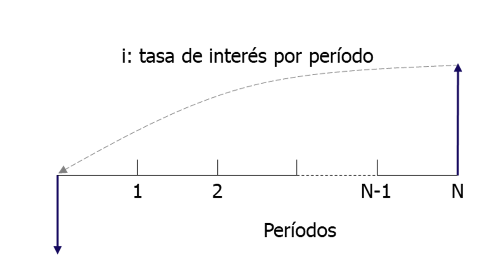
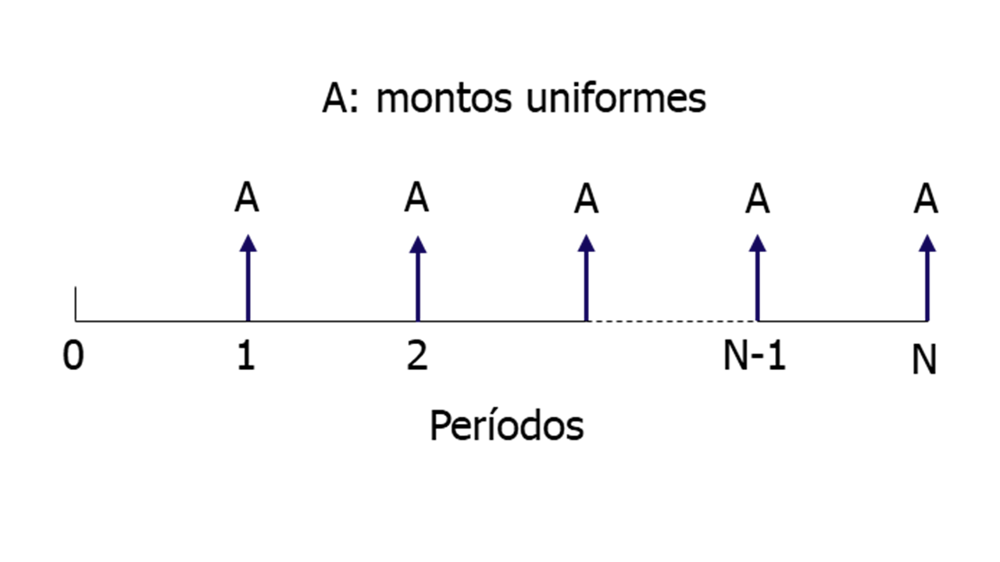
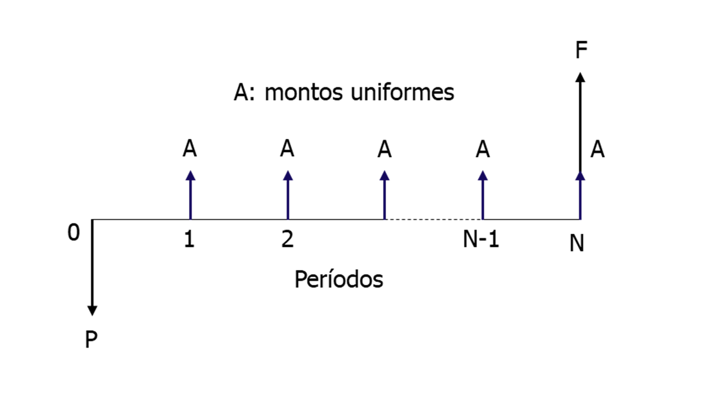
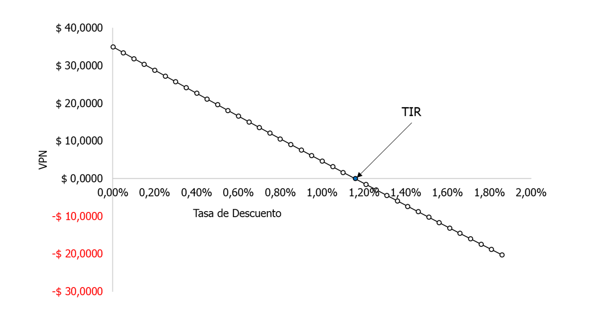
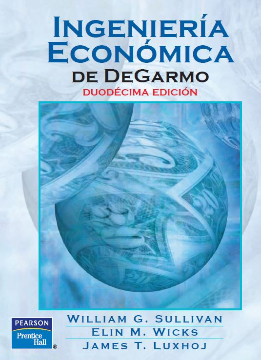

Introducción a las Matemáticas Financieras¶
Esta sección es solo una introducción a las operaciones con las Matemáticas Financieras.
Presentación del curso: aquí
Cómo funciona la máquina económica, por Ray Dalio — aquí.
1. Tasas de interés, Valor Presente (P) y Valor Futuro (F)¶
Se explicarán los conceptos de Interés Simple e Interés Compuesto. Por último, se explicará la forma de hallar el flujo de caja equivalente entre un Valor Presente y un Valor Futuro.
{kind=link}

2. Anualidades¶
Las Anualidades son una serie uniforme de pagos que ocurren con la misma frecuencia. El termino de Anualidad no solo se expresa para pagos anuales, es un término genérico para cualquier corriente de pagos que pueden hacerse en otros períodos diferentes.
{kind=link}

{kind=link}

3. Tasas nominales, efectivas y anticipadas¶
Se explicarán las equivalencias entre las tasas nominales, efectivas y anticipadas.
4. Criterios de decisión¶
Existen muchas métricas que evalúan las inversiones, pero en esta sección sólo se explicará el VPN y TIR como criterios de decisión para invertir o no.
{kind=link}

{kind=link}
{kind=link}
{kind=link}
Lecturas¶
{kind=link}

{kind=link}
{kind=link}
- 1
Capítulo 3: Relaciones dinero-tiempo y sus equivalencias. Ingeniería Económica de DeGarmo. Sullivan, Wicks y Luxhoj. Duodécima edición.
- 2
Capítulo 5: Anualidades o series uniformes. Matemáticas financieras aplicadas. Meza. Cuarta edición.
- 3
Sección 3.16 Tasas de interés nominal y efectiva. Ingeniería Económica de DeGarmo. Sullivan, Wicks y Luxhoj. Duodécima edición.
- 4
Capítulo 4: Tasas de interés. Matemáticas financieras aplicadas. Meza. Cuarta edición.
- 5
Capítulo 8: Evaluación de alternativas de inversión. Matemáticas financieras aplicadas. Meza. Cuarta edición.